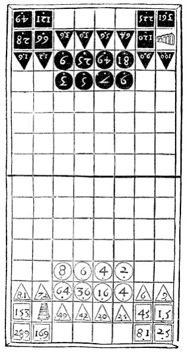

数海拾贝14
波伊提乌留下一个相当有趣的文化遗产——哲学家的游戏。这个游戏的名字叫 Rithmomachy，中文译成“数棋”。棋盘很像国际象棋，棋子上标着不同的数字，一方是双数，一方是单数。下棋时，双方按照某种规则移动棋子，当一方的棋子碰到对方的棋子，达到某种特殊比例的时候，就可以把对方的棋子“吃掉”或打败。比例可以是连带的，比如 x ∶1，（x+1）∶x， （x+2）∶x，（x+3）∶x。也可以是平均值，这里波伊提乌定义了三种平均：算数平均，m=（a+b）/2，比如1∶2∶3；几何平均，a:m=m:b，例如1∶2∶4；和谐平均，m=2ab/（a+b），比如3∶4∶6，等等。总之规则非常复杂，但都遵循数学计算法则。这种游戏15世纪到17世纪在欧洲宗教场所和大学非常流行，被认为是最崇高的游戏，故称“哲学家游戏”。但它不为大众所喜，已经失传了。
